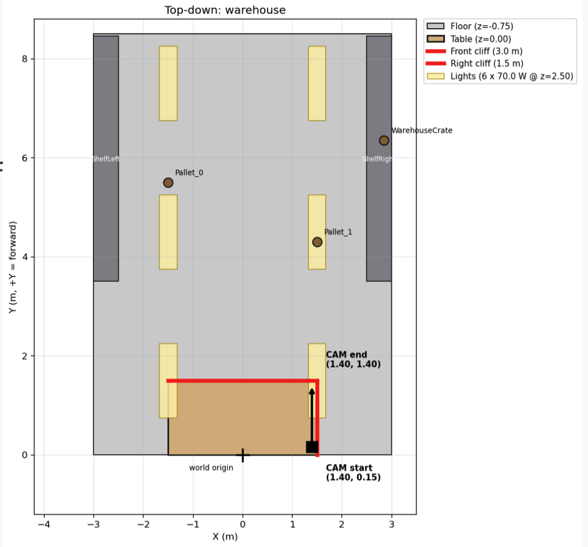
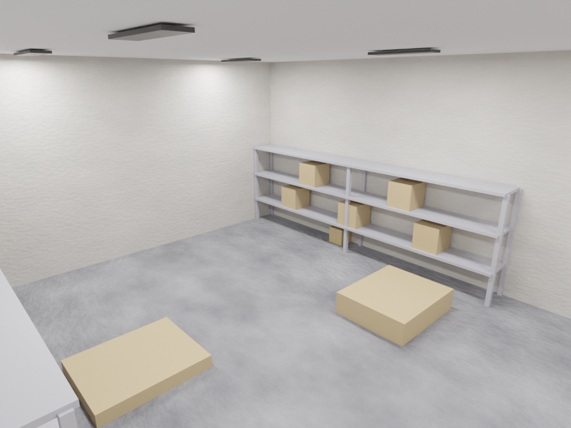
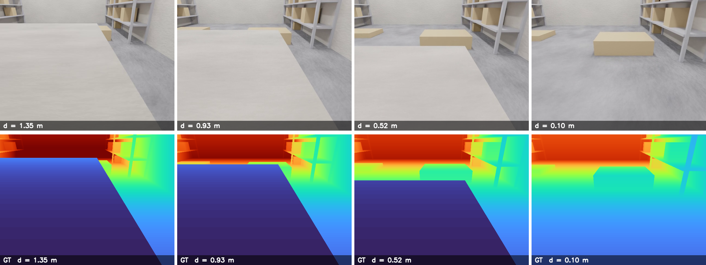
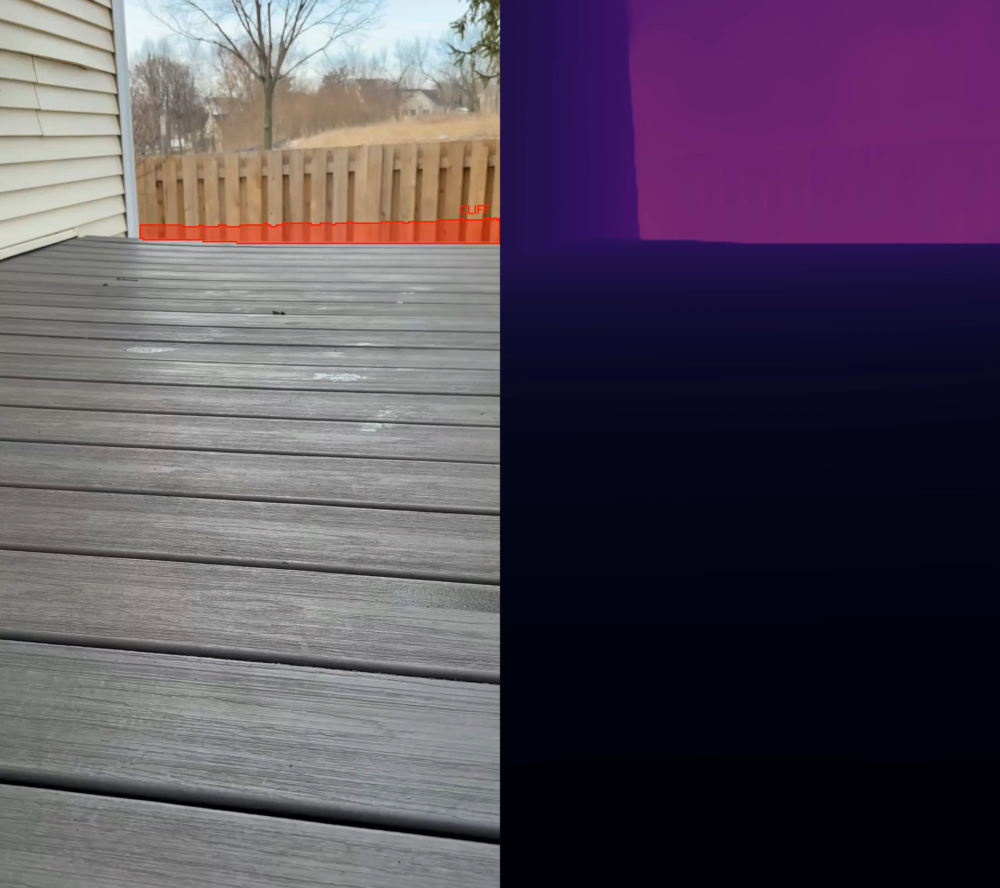

We present a cliff detection pipeline for autonomous robots using Depth Anything V3 (DA3), a monocular depth estimation model. Given a single RGB camera, the system estimates per-pixel depth, lifts it into a 3D point cloud, fits a ground plane via RANSAC, and flags regions that drop significantly below that plane as cliffs. We evaluate the pipeline on both real-world video and synthetic data generated using VisionSIM, which provides per-pixel ground-truth depth. On a warehouse loading-dock scenario, LS-aligned DA3-Large achieves a median AbsRel of 0.090 and δ<1.25 of 94.96%. The main bottleneck for real-world deployment is inference speed: DA3-Base runs at roughly 0.1 fps on an Apple M1, far below the 10+ fps needed for interactive robot control.
Autonomous robots in warehouses rely on LiDAR and cameras for navigation. A persistent failure mode is cliff detection — the inability to identify negative obstacles like stair edges, platform drops, or open bay doors. Standard 2D LiDAR scans a fixed horizontal plane, so a downward drop registers no return ping and is completely invisible to the system.
Our goal is to detect cliff edges from a single RGB camera — hardware already present on most robots, with no additional cost or hardware changes.
DA3 is a monocular and multi-view depth model from ByteDance Seed. It predicts spatially consistent 3D geometry from any number of RGB views, with or without known camera poses. Our pipeline uses its per-pixel depth output, lifted into a 3D point cloud for cliff detection.
Inference time on Apple M1 per frame: Small ~3s / Base ~3s / Large ~6s / Giant ~17s.
Tunable parameters: camera intrinsics, RANSAC residual threshold, cliff height threshold, ground region fraction (default 50%).
We used VisionSIM to generate synthetic evaluation data with per-pixel ground-truth depth — something real RGB-D sensors cannot reliably provide at depth discontinuities.
Pipeline: Blender scene → VisionSIM render (RGB + ground-truth depth + camera transforms) → DA3 inference → scale+shift alignment → metrics. We also implemented weighted sliding-window alignment to handle DA3 scale drift along trajectories.

Top-down view of the scene

Generated scene

Generated camera image and ground truth depth data
The algorithm can produce false positives when a fence or distant background creates a depth discontinuity that RANSAC mistakes for the ground level.

False positive: fence in background confuses ground plane estimation
Warehouse interior with a loading-dock cliff (3m × 1.5m dock, 0.75m drop). Camera: 640×480, 70° HFOV, −25° pitch, head-on approach at 0.2 m/s. Model: DA3-Large.
| Metric | LS Median | LS Mean | RANSAC Median | RANSAC Mean |
|---|---|---|---|---|
| AbsRel ↓ | 0.090 | 0.119 | 0.099 | 0.254 |
| RMSE (m) ↓ | 0.476 | 0.509 | 0.279 | 0.389 |
| δ < 1.25 ↑ | 94.96 | 83.82 | 91.45 | 84.79 |
| δ < 1.25² ↑ | 99.67 | 94.80 | 99.64 | 90.37 |
| δ < 1.25³ ↑ | 99.78 | 97.26 | 99.75 | 92.40 |
Bold = better per metric. AbsRel = mean |pred−gt|/gt. RMSE in meters. δ < 1.25k = % pixels where max(p/g, g/p) < 1.25k.
Best frame (LS): #156 AbsRel 0.009. Worst frame: #120 AbsRel 0.467. Per-frame scale ranged 0.49–2.44, showing DA3 scale drifts along the trajectory. The mean/median gap indicates a few outlier frames dominate the average, motivating sliding-window alignment.
DA3 is currently too slow for real-time robotics on consumer hardware. At 2 fps on an Apple M1, DA3-Base takes ~10 minutes for a 1-minute video; DA3-Large takes ~40 minutes. The cliff detection step itself takes only ~7 seconds, so inference is the bottleneck. Real-time deployment would require GPU acceleration, a lighter model variant, or quantization.
When the camera is very close to the cliff, the surface below occupies more than 50% of the bottom frame region. RANSAC incorrectly identifies it as the ground plane and misses the cliff. In practice this is less critical — the cliff should have been detected earlier in the approach, and odometry or localization can help the robot remember and avoid the location.